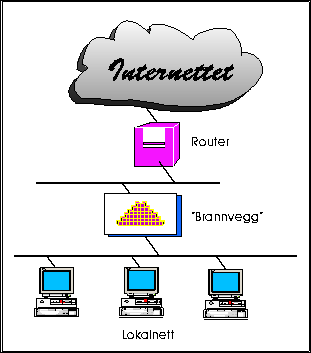

Internettet er et såkalt åpent datanett, dvs. et nettverk der man må anta at all datakommunikasjon foregår på åpne linjer, ala det offentlige telenettet.
Dette betyr for det første at trafikk kan avlyttes. Det betyr også at "alle kan snakke med alle" prinsippet gjelder så fremt man ikke innfører sperrer og hindringer.
At "alle kan snakke med alle", betyr igjen at en bedrift som knytter seg
til Internettet kan risikere å blottlegge bedriftens interne datasystemer
for hele Internettet. Hvis sikkerheten i bedriftens interne nett er god,
hadde ikke dette behøvd å bety så mye, men all erfaring viser at dette
er unntaket snarere enn regelen!